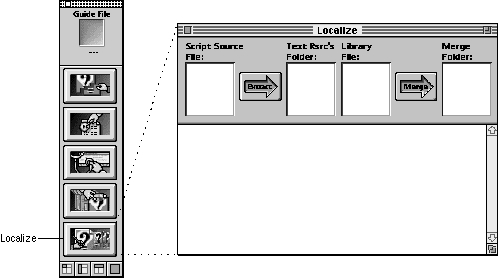
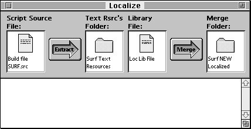

The Localizing Process
You need to localize all elements of your guide file that are language-specific, such as text strings and pictures. These include, for example, the name of your guide file (as it appears in the Help menu), topic areas and topics, titles of panels, text in panels, objects to coach (for example, the names of folders, menus, and menu items), button labels, index terms, and Look For content. Fortunately, Guide Maker provides the Localize utility to help you accomplish these tasks. Figure 7-1 shows the Localize window.Figure 7-1 The Localize window

Figure 7-2 shows the Localize window after specifying everything you need to.
Figure 7-2 The Localize window with files and folders specified

To localize your guide file, open the Localize window and follow these 10 steps:
Congratulations, your guide file is now localized! After creating your localized guide file, you should test it, as described in the chapter "Testing Your Guide File."
- Select the source file to extract text strings from.
Click in the Script Source File area of the Localize window. Guide Maker displays a dialog box from which you can select your source file. You can select a single source file, or you can select your build file to extract text strings from all source files at once.
- Select the folder to hold the files containing the extracted text strings.
Click in the Text Rsrc's Folder area. Guide Maker displays a dialog box from which you can select a folder to hold the extracted text resources. Guide Maker creates a resource file for each source file you localize; it places all of the resource files in the text resources folder that you specify.
- Create a localization library file.
Click in the Library File area of the Localize window. Guide Maker displays a dialog box, in which you indicate whether you want to create a new localization library file or use an existing one. After you choose, Guide Maker prompts you to either name the new library file or select an existing library file.
The localization library file contains information about the position of the extracted text strings in the source files. When you merge the localization library file and the localized text strings, Guide Maker uses the information in the library file to make sure that the text strings are placed into the proper place in the localized script source file.
- Extract the text strings.
Click the Extract arrow in the Localize window. Guide Maker begins extracting text strings from all source files listed in the build file. It creates a file for each source file, appending
.RSRCto each of these filenames. It places these files in the text resources folder that you specified in step 2.- Translate the extracted text strings.
Use a resource editor such as ResEdit or AppleGlot to translate the extracted text strings in the
.RSRCfiles.Guide Maker stores the extracted text strings as resources of type
'TEXT'with resource names that give information about the text string. By looking at a resource name, you can determine the Guide Script command associated with the text string, and from that information you can induce the structure of the text string. See the section "Translating Text Strings" for additional information on translating these text strings.- Select the folder to hold the localized source files.
After you localize the extracted text strings, you can merge the translated text back into your source files. To do this, click the Merge Folder area of the Localize window. Guide Maker displays a dialog box from which you can select a folder to hold the new localized source files.
- Merge the translated strings and localization library file.
Click the Merge arrow in the Localize window. Guide Maker begins merging the text strings from the
.RSRCfiles back into the source files. It places the new localized source files in the folder you selected in step 6.- Localize any
'PICT'resourcesFor example, if your application logo contains text, you should localize the text using a graphics application.
- Make any additional localization changes to your source files as needed.
For example, you might need to adjust formats or localize a QuickTime movie.
- Build a guide file with the localized source files.
Build a new guide file (using the process described in the chapter "Creating Your Guide File"), only specify the build file that Guide Maker placed in the Merge folder. You must also copy any auxiliary files used by your source file (such as
'PICT'resources or scripts) into the Merge folder before compiling.